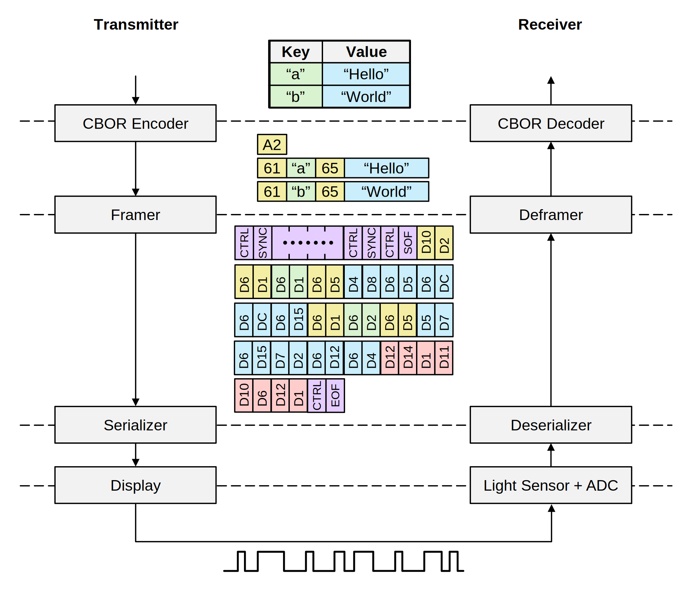
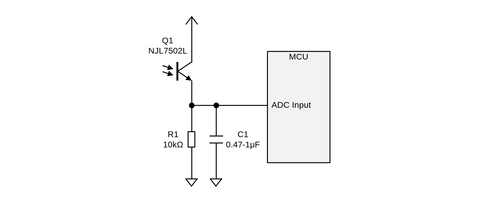
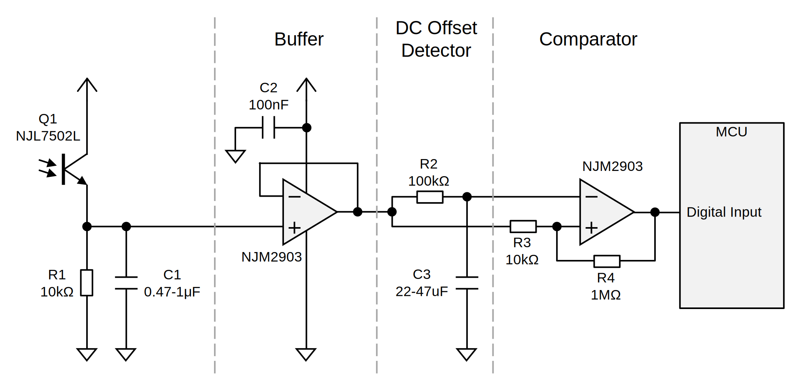

VLConfig: ディスプレイの点滅でデバイスに設定を書き込む
IoT デバイスのような、リッチな入力インタフェースを持たないデバイスに対し、WiFi 設定等を書き込むためのプロトコルと C++ ライブラリを作りました。
動作の様子
リポジトリ
プロトコル
送信側では設定内容を Key Value Pair にし、それを CBOR にエンコードし、4b/5b 変換、シリアル化して画面を点滅させます。
受信側は光センサで明暗の変化を検出し、5b/4b 変換して CBOR オブジェクトを復元します。
CRC32 による誤り検出はありますが訂正は無いので、エラー発生時は最初から送信し直す必要があります。

送信ツール
送信はブラウザから行います。
フォームの項目は、URL のハッシュ部分に JSON 風の文字列を与えることで指定できます。
- 例: https://shapoco.github.io/vlconfig/#form:{t:WiFi%20Setup,e:[{k:s,t:t,l:SSID},{k:p,t:p,l:Password}]}
https://shapoco.github.io/vlconfig/#form:{
t:タイトル,
e:[
{k:キー, t:タイプ, l:ラベル, v:デフォルト値},
{k:キー, t:タイプ, l:ラベル, v:デフォルト値},
{k:キー, t:タイプ, l:ラベル, v:デフォルト値},
:
:
]
}
キー: CBOR オブジェクトのキーとして使用されます。-
タイプ: 形式 (今後追加するかも)。設定値 UI CBOR 形式 tテキストボックス テキスト文字列 pパスワードボックス テキスト文字列 iIP アドレス バイト列 n数値入力 整数値 cチェックボックス 真偽値 ラベル: UI のラベル。デフォルト値: 入力欄に予め設定する値 (省略可)。
URL を短くするため、[、]、{、}、:、, のうちいずれも含まない文字列リテラルについてはダブルクォーテーション (") を省略できます。
送信ボタンを押すと、キー の値とフォームの入力値のペアが CBOR オブジェクトとして送信されます。
受信回路
ADC を使用する場合
ADC 入力が空いていれば、次のようにするのが簡単です。ある程度の信号振幅が得られればセンサは何でもいいです。ディスプレイによっては輝度が PWM 制御されているため、C1 で平滑化する必要があります。

デジタル入力を使用する場合
デジタル入力を使用する場合は、明暗を判別する回路を外付けする必要があります。DC オフセットを検出してそれと比較する構成にすると、環境やデバイス特性の違いに対してある程度ロバストになります。

受信ソフトウェア
受信処理はライブラリ化されています。ライブラリ自体は特定のプラットフォームに依存しません。その代わり ADC 入力処理やサンプリングタイミングの保証はユーザ側で行う必要があります。
デモプログラム
ライブラリ使用方法
-
設定項目リストを
vlcfg::ConfigEntryの配列として定義します。配列の最後の要素はゼロ埋めして配列の終端を示します。// 設定項目のキー const char *KEY_TEXT = "t"; const char *KEY_PASS = "p"; const char *KEY_NUMBER = "n"; const char *KEY_IP_ADDR = "i"; const char *KEY_LED_ON = "l"; // 設定値が格納されるバッファ変数 char text_buff[32 + 1]; char pass_buff[32 + 1]; int32_t number_buff; uint8_t ip_buff[6]; uint8_t bool_buff; // 設定項目リスト vlcfg::ConfigEntry configEntries[] = { {KEY_TEXT , text_buff , vlcfg::ValueType::TEXT_STR, sizeof(text_buff) }, {KEY_PASS , pass_buff , vlcfg::ValueType::TEXT_STR, sizeof(pass_buff) }, {KEY_NUMBER , &number_buff, vlcfg::ValueType::INT , sizeof(number_buff)}, {KEY_IP_ADDR, ip_buff , vlcfg::ValueType::BYTE_STR, sizeof(ip_buff) }, {KEY_LED_ON , &bool_buff , vlcfg::ValueType::BOOLEAN , sizeof(bool_buff) }, {nullptr, nullptr, vlcfg::ValueType::NONE, 0}, // terminator }; -
vlcfg::Receiverをインスタンスします。コンストラクタの引数には CBOR オブジェクトのバッファサイズを指定します。vlcfg::Receiver receiver(256);
-
受信開始時に
vlcfg::Receiver::init()をコールします。receiver.init(configEntries);
-
可能な限り正確に 10 ミリ秒間隔で ADC 値を取得し、
vlcfg::Receiver::update()をコールします。vlcfg::RxState rx_state; auto ret = receiver.update(adc_read(), &rx_state);
デジタル入力を使用する場合はデジタル値を適当な振幅のアナログ値に変換して引数に与えます (例: Low=0, High=2048)。
rx_stateがvlcfg::RxState::COMPLETEDになったら受信完了です。rx_stateがvlcfg::RxState::ERRORになるか、retがvlcfg::Result::SUCCESS以外になったら受信失敗です。 -
受信されたデータは設定項目リストに指定したバッファ変数に格納されます。
入力フォームで空欄にした項目は送受信されません。ある項目が送受信されたかどうかは
vlcfg::ConfigEntry::was_received()メソッドで分かります。
詳細はデモプログラムを参照してください。